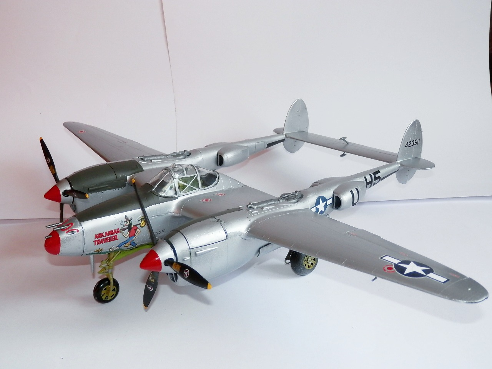
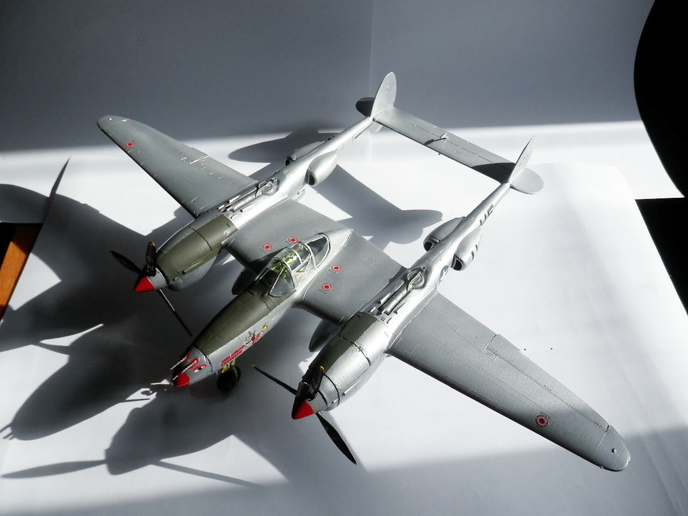
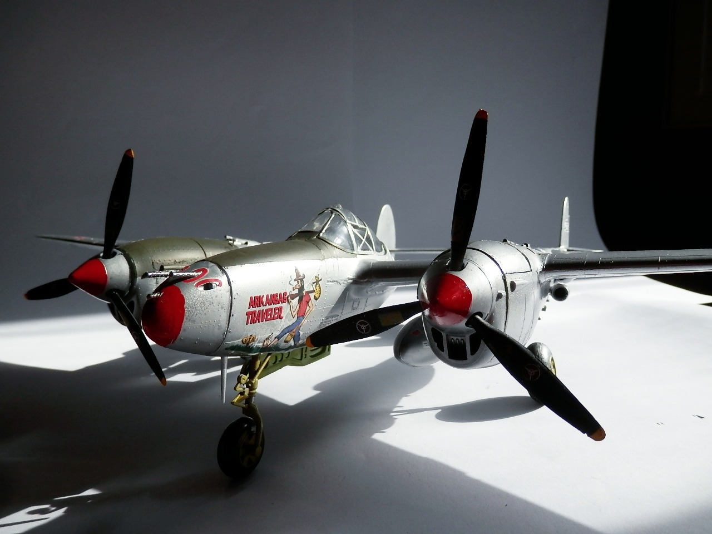
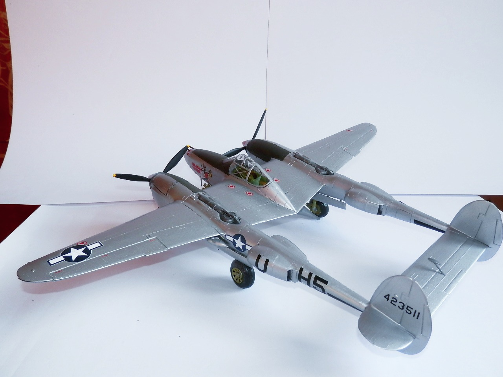
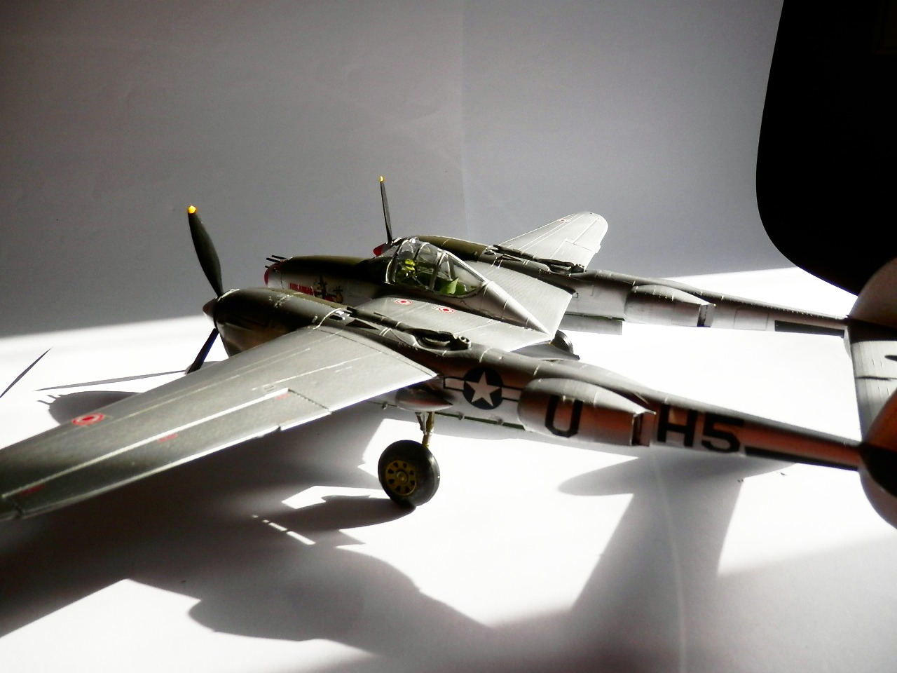

Aerei · scale model archive
Lockheed P38 J-20-LO Lightning
Lockheed P38 J-20-LO Lightning — Kit: Revell, Scale: 1/32. Arkansas traveller Pilot Lt. Owen Fincher 392 FS 367 FG Jovincourt 1945 Also in this case a…

Photo gallery




English description
Arkansas traveller Pilot Lt. Owen Fincher 392 FS 367 FG Jovincourt 1945
Also in this case a huge, impressive kit, I should definitely spend it a bit of more surface detailing and post shading...
Descrizione italiana
Arkansas Traveller, pilota Lt. Owen Fincher, 392 FS, 367 FG, Jovincourt 1945. Anche in questo caso un kit enorme e impressionante; dovrei decisamente dedicargli un po’ più di lavoro.